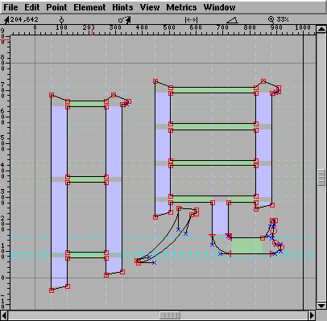
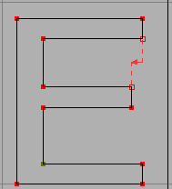
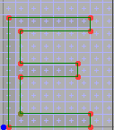

One of the major
advantages of hint substitution is that it allows certain standard serif
situations to be described. In the example at right, the serif one the left
is smaller than the stem a bit further right.
One of the major
advantages of hint substitution is that it allows certain standard serif
situations to be described. In the example at right, the serif one the left
is smaller than the stem a bit further right.
Postscript originally required that hints should not overlap. Now it requires that any active set of hints be non-overlapping, but it allows you to change sets as you move through the character.
So to implement hinting with hint substitution PfaEdit needs to know not only the position and width of the stem being hinted, but also where the stem should be active. And it needs to know what stems overlap which other stems.
 The horizontal stems are drawn in light green. The vertical stems are drawn in light blue. The areas where the stems are active are filled in as rectangles, outside of that area the stems' outlines are drawn with dotted lines. Most of these stems do not conflict with any other stems, but two, the bottom two horizontal stems conflict with each other. All the non-overlapping stem hints may be active at the same time, but only one of the two conflicting stem hints may be active. As PfaEdit outputs the character it decides at each point what stems need to be active, and activates them.
Postscript now allows PfaEdit to control relative counter sizes. Counters are the spaces between adjacent stems. In the example at left there are two counters of equal sizes on the between the horizontal stems on the left, and three counters of equal sizes on the right. These form two independent counter groups, and PfaEdit will generate a counter description for each of them (Postscript allows type designers to specify the relative importance of different counter groups. PfaEdit is not this sophisticated, counters are output in left to right (bottom to top for vertical) order.
Counters spaces appear between vertical stems too, and in this case Pfaedit would output one counter group for the vertical stems.
One of the major
advantages of hint substitution is that it allows certain standard serif
situations to be described. In the example at right, the serif one the left
is smaller than the stem a bit further right.
 But it doesn't
solve all problems (or I don't know how to use it to do so). Consider the
serif on the right. Hint substitution would allow us to define a hint for
the main vertical stem and for the short vertical stem that corresponds to
the serif. But the problem that needs to be solved is making the distance
between the left edge of the serif and the left edge of the stem be the same
as the distance between the right edge of the stem and the right edge of
the serif. But doing so would require overlapping hints, active at the same
time. I think
But it doesn't
solve all problems (or I don't know how to use it to do so). Consider the
serif on the right. Hint substitution would allow us to define a hint for
the main vertical stem and for the short vertical stem that corresponds to
the serif. But the problem that needs to be solved is making the distance
between the left edge of the serif and the left edge of the stem be the same
as the distance between the right edge of the stem and the right edge of
the serif. But doing so would require overlapping hints, active at the same
time. I think
I hope that the PfaEdit's autohint command will be good enough that manual efforts will not be needed. But hopes are rarely fulfilled.
The AutoHint command should find all stems in a character. Some of them it deems to be useless and will remove them. If you find that PfaEdit is removing a hint that you think is important then invoke Hint->AutoHint with the shift key held down, this will tell PfaEdit not to prune any of the stems. You may then use Review Hints to prune things yourself.
If you find that you must create your own hints, PfaEdit will only allow you to specify the position and width of the hint, it will then go off and try to guess the extents where the hint should be active.
PfaEdit will not be able to read hint info out of a TrueType font at all (the format is too complex, there are too many posibilities). From a Type1 font without hint substitution it will happily read all the hints in a character. In a Type1 font with hint substitution it will read some random subset of the hints, and will mark the font as in need of having its hints regenerated. In an OpenType (Type2) font PfaEdit will read in all the hints, but it will have to figure out by itself where those hints are active (it will not read that from the font file).
Hinting TrueType fonts opens a far wider range of posibilities. I have added several types of hints that are specific to truetype (and will be ignored by the postscript generation routines). These by no means exhaust the capabilities of TrueType, I'm working on another tool for TrueType hinting, called ttfmod (it doesn't do much yet though).
 |
 A fully hinted glyph is completely grid fit, but the difference between stem lengths is lost. |
 |
 One attempt to solve the above problem, compare to below. |
|  |  Note how the different directions in the md hint change the rasterization |
I find the hint documentation inadequate for me to do a good job at hinting.
 How do
hints work? Is a hint meaningful if there are no points associated with it?
As in the "O" at right, where the two vertical stems have no points associated
with them.
How do
hints work? Is a hint meaningful if there are no points associated with it?
As in the "O" at right, where the two vertical stems have no points associated
with them.
Overview of Hinting in Postscript and
TrueType.
Hinting menu.